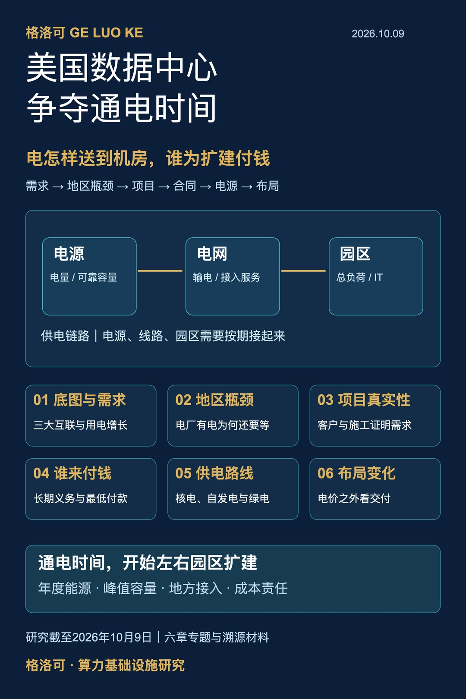
美国数据中心的电力现状：缺口在哪里，谁来补，谁付钱
格洛可｜2026年10月9日
2026年6月，得州电网运营商ERCOT改变了大型用电项目的接入研究方式：把符合条件的申请放进共同批次，研究它们一起接入会给系统带来什么影响。数据中心开发商要等的，不只是各自那份申请的答复，还包括一套能同时容纳这些项目的输电方案。几个月前，弗吉尼亚监管机构也给大型客户加上了更明确的长期付款和担保条件。电网开始要求扩张中的算力项目说明两件事：电到底什么时候用起来，新增设施的钱由谁承担。[6][8]
电力正在改变美国数据中心的扩张方式。服务器、土地和客户合同备齐了，园区仍可能等待一座变电站；签下长期核电，也要继续安排输送和备用。用电在增长，但增长落在哪儿、哪些申请会兑现、供电能否按期到达，决定了下一座机房建在哪儿、什么时候开业。要理解这场变化，先从美国的电力地图看起。[4][5][13]
本篇覆盖：美国电力与数据中心底图、需求及项目真实性、地区瓶颈、成本分担、供电路线、布局变化。
第一章 用电增长，落在怎样一张电力地图上
美国本土连续的四十八个州，主要分属东部互联、西部互联和得州的ERCOT互联三大电力系统。每个系统内部的交流电网同步运行，三者之间没有全国统一的同步网络。东、西两大系统还连接加拿大部分电网；ERCOT覆盖得州大部分地区，州内西端、北部和东部另有其他互联覆盖。阿拉斯加和夏威夷不在这张本土地图里。[1][6]
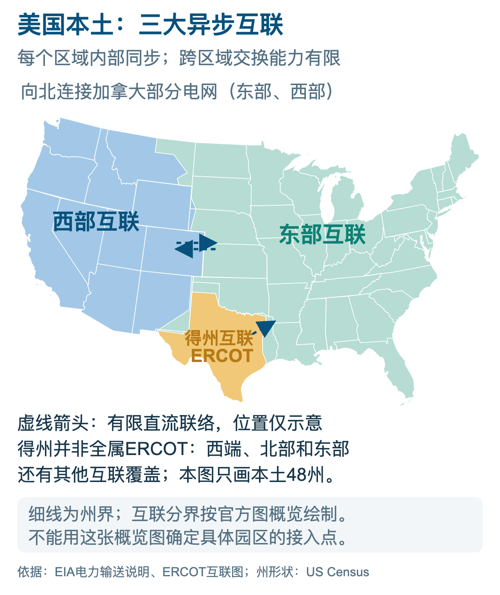
图1｜美国本土的三大异步互联。来源：EIA、ERCOT；州形状依据US Census地理数据。
图上的州界，并不是电力系统的全部边界。不同颜色之间有有限的直流联络，可以交换电力，但交换规模受设备容量与运行条件约束。西部有富余电，不能据此认定东部某个园区就能及时用上；得州大部分地区也不能像同一张交流电网内部那样，直接参与东西部的同步调度。[1][6]
地图回答了电在什么系统内流动，接下来还要找清楚谁管调度、谁负责送到客户门口。物理互联之下有区域市场与调度体系，再往下是具体电力公司的服务区。数据中心的签约供电方、区域调度机构和资产所有者，可能是不同主体。[1][2]
美国常说的七家RTO/ISO，是PJM、MISO、SPP、CAISO、NYISO、ISO-NE和ERCOT。它们组织区域输电调度或批发市场，各自的职责和覆盖范围不同。七家机构并不是七家包办发电、输电、配电与零售的垂直垄断电力公司，也没有覆盖全美国所有地区。FERC在2026年6月针对其管辖的六家推出大负荷改革要求，ERCOT不在这组六家之中。[2]
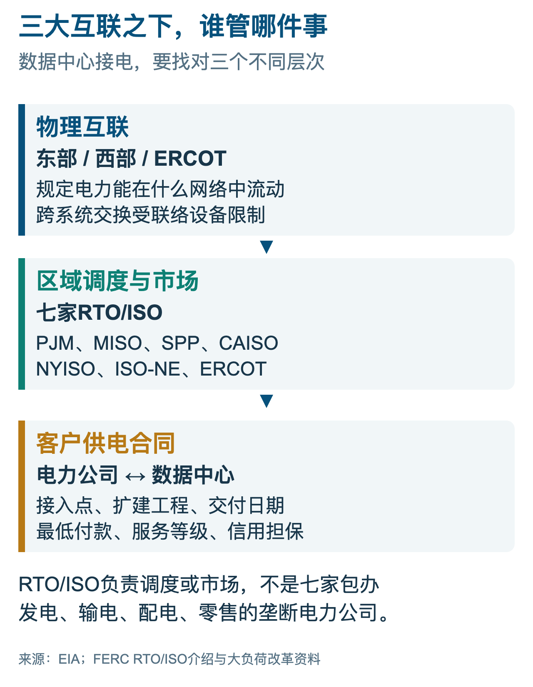
图2｜物理电网、区域调度与客户合同。来源：EIA、FERC。
区域调度把发电资源、输电约束与用电需求放进共同规则，协调系统运行；地方电力公司则要落实客户接入：扩哪座变电站、修哪条线路、何时送电、采用什么费率。园区即使找到愿意卖电的发电商，这些工作也仍要完成。图中三层关系，分别对应全国系统、区域协调和客户交付，不能用一份购电合同把它们一并解决。[1][2]
电力公司多，也不意味着每个地方都有许多家公司争夺同一个客户。投资者所有的公用事业、市政公用事业、合作社、独立发电商和零售供电商，承担不同角色。地方网络通常有服务范围，零售选择权随地区制度变化。能换售电合同，未必能换掉送到园区的那条线路。[1][2]
地区差异因此很大。进入PJM区域，项目要理解区域资源充足性和输电服务规则，也要理解地方公用事业与州监管的要求；进入ERCOT区域，项目又要面对得州自身的市场、接入和大负荷管理制度。把一个州的工业平均电价与另一个州相比，只看到了结果的一部分，看不到客户将采用哪种服务、需要建设哪些资产，以及愿意承担哪些中断风险。[5][6][8]
这套分工有长期的法律与制度来源。1935年对《联邦电力法》的修订，奠定了联邦监管跨州输电与电力批发的重要法律基础。同年出台的《公用事业控股公司法》，重点处理公用事业控股公司的组织与监管。两部法律不能混作一部；地方零售和公用事业监管，通常仍保留重要的州级权限。[1][2]
建跨州线路，要协调路线、土地、环境、各州选址规则，以及涉及联邦土地等条件下的联邦手续。土地所有者和社会团体也可以通过土地权利、公众参与或诉讼影响项目。各方的权利和程序不同，协调成本却会共同落到工期上。联邦促进输电和特定条件下介入选址的机制，仍要在这套现实框架中推进。[3]
对园区而言，这些制度最终要变成具体的交付承诺：由哪家电力公司供电，接到哪座变电站，扩建哪些线路，费用怎样回收，容量何时分期释放。国家层面的政策改变方向，服务区内的合同与工程决定开业日期。开发商需要把电力地图继续放大，一直看到供电服务区和接入点。[5][8]
数据中心并没有均匀铺在这张地图上。弗吉尼亚州议会联合审计与审查委员会JLARC在2024年的研究中，把北弗吉尼亚列为全球最大的成熟数据中心市场之一。网络连接、客户、配套服务和建设经验，让企业愿意继续聚集；新增电力需求也因此持续压向同一地区。[7]
集群内部，已有机房和新园区的处境也不同。已经接入的设施拥有现成供电条件，隔街新建的园区却可能触发新的网络投资。买下一座带供电合同的机房，与买地重新申请接入，资产价值不同；评估时要查合同权利能否转移、扩容能否获批，以及现有容量是否适合新的设备密度。[7][8]
这种集聚产生了一个容易被忽略的现象：全国数据中心用电占比，与某个供电区承担的数据中心压力，可能相差很大。全国平均数把数据中心少的地区和集中的地区放在一起，地方规划却必须处理客户集中接入的时间与地点。北弗吉尼亚的困难不能通过全国平均数抹平，也不能反过来被当作全美国所有园区的同一状态。[7][14]
讨论“美国数据中心现状”，也不宜把机房数量当成最重要的刻度。企业自用机房、云园区、托管设施和AI训练集群，规模、负载和运行要求不同；小型机房很多，并不意味着它们在新增用电中同样重要。对电力系统更有用的问题是，哪类园区正在增长、需要多少总设施功率、什么时候形成真实负荷，以及能否在紧张时段调整运行。[4][13]
同样，一个园区披露的“MW”还需要追问指的是什么。它可能是购电合同规模、接入额度、变电设施容量、园区总负荷，或真正供服务器使用的IT功率。电网服务整个设施，除了服务器，还包括冷却、供配电损耗和其他运行设备。没有说明容量口径，便把公告里的MW全部累加成“AI算力规模”，就会把不同对象放进同一个账本。[4][11]
设施效率指标PUE，把设施总能耗与IT设备能耗联系起来，但它也有使用边界。年度PUE可以帮助换算年度能源，不能未经检查直接把年平均值用作所有时刻的峰值系数。冷却负荷会随环境和运行条件变化，园区的备用设施配置也不是实际同时消耗的功率。研究IT规模、电力账单和接入容量时，需要把年度能耗、峰值负荷和设备冗余各自保留。[4]
全国层面，用电增长已经相当明显。伯克利国家实验室LBNL在2024年发布的研究估算：美国数据中心2023年用电176TWh，占总用电量约4.4%；2014年为58TWh。十年间的变化，已经足以让电力规划把数据中心当作重要负荷。这套估算覆盖数据中心整体，包含AI以外的用途，采用研究模型，并非逐座机房电表的直接汇总。[3][4]
同一报告预测，2028年美国数据中心全年用电可能达到325—580TWh，占美国总用电量约6.7%—12%。预测在2024年提出，区间宽度来自设备数量、使用率、AI需求与设施效率的不同假设。芯片功率提高会推动增长，新增设备装了多少、每年运行多久，同样影响最终电量。[3][4]
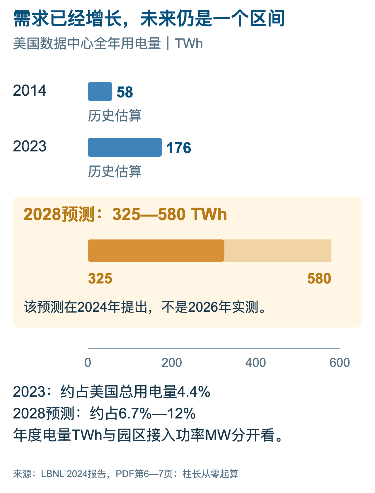
图3｜历史用电与2028年预测区间。来源：LBNL 2024年报告，PDF第6—7页。
全国数字交代了行业方向，园区送电仍要看功率、地点与时间。TWh表示一段时期的电量，MW或GW表示功率。额定功率一样，全年稳定运行和只运行少数时段，消耗的电量不同；电网还要考虑这些负荷会不会同时出现在系统高峰。[1][4]
做一个说明性计算：假设某园区全年总设施负荷始终为100MW，一年按8760小时计算，年度用电就是0.876TWh。这个换算只把固定负荷变成年度能量，不代表真实园区的服务器利用率，也不包含开业后逐年装机的爬坡。若把规划终期功率从第一年起都按满载计算，既可能夸大眼前用电，也可能误判收入和电费的兑现时间。
国际能源署2026年4月的新报告，进一步解释了需求增长和不确定性为什么同时存在。AI相关设施的扩张很快，单次任务的能效也在改善；更低的单位使用成本可以扩大应用，而更复杂的模型和任务又会增加计算量。总用电最终取决于效率和使用量的共同变化，不能从某个模型一次推理更节能，就推出整个数据中心行业将停止增长。[13]
第二章 电厂有电，园区为什么还要等
园区等电，可能等在三处。第一处是发电：区域在关键时段有没有足够可靠的资源。第二处是输电：电源有了，通道能否把电送进负荷区。第三处是接入：上游条件具备，园区所需的线路、变电站和设备是否完成。图中沿着电厂、线路和变电设施看过去，就能看到这三种约束；它们需要不同的工程，购电合同无法代替最后一段线路。[1][7][14]
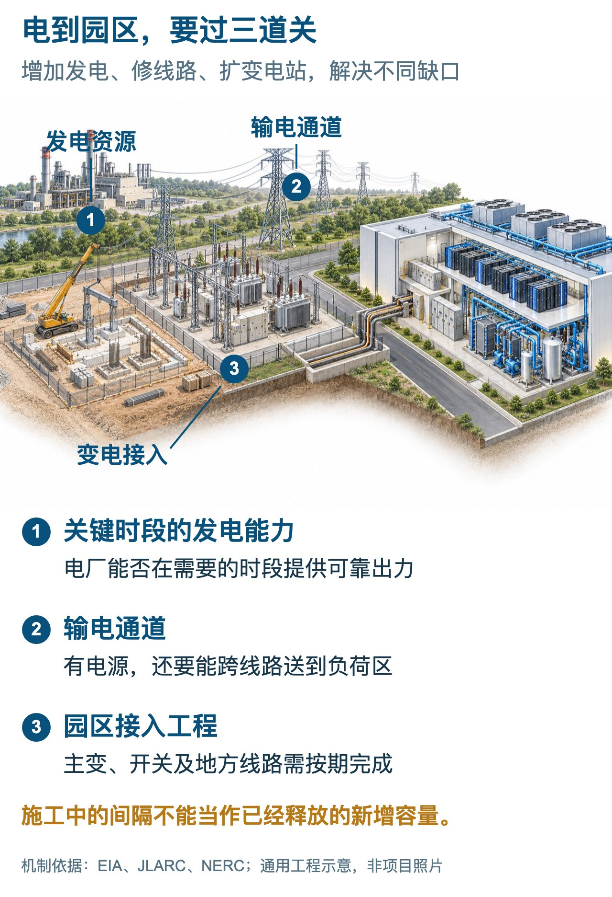
图4｜发电、输电和园区接入三处瓶颈。来源：EIA、JLARC、NERC；通用工程示意。
发电资源是否够，不能只看电厂装机铭牌。电力规划要考虑设备检修与故障、天气、燃料，以及风光资源在紧张时段能贡献多少。不同资源对年度电量的贡献，与对高峰可靠供电的贡献并不相同。NERC的评估把容量与能量风险放在一起分析，就是为了避免用总装机数字掩盖特定时段的不足。[14]
输电则有自己的空间约束。电流并不会因为买卖双方签了合同，就只沿他们想象中的一条线路走；区域潮流、线路限额、故障后的运行安全都会影响可交付电力。电厂附近出现新增负荷，和远处出现同样规模的负荷，对系统造成的影响不同。因此，“这个州有多少发电”与“这个园区可不可以接入”，从来不是等价的问题。[1][2]
可靠性要求还会让“看起来有空余”的网络无法全部用于新客户。正常运行时线路可能没有满载，规划仍需考虑某条线路或设备退出后的状态；园区若要求高可靠服务，就必须纳入这种故障条件。工程冗余与闲置浪费不是同一个概念。判断存量网络可以承接多少新增负荷，需要系统研究，不能把某一时刻的低利用率直接乘成可售容量。[1][14]
北弗吉尼亚卡在成熟集群继续增长与系统扩建之间。JLARC的研究讨论了新增发电、输电、审批和居民成本等约束。网络与客户优势吸引企业继续聚集，新增容量便更依赖地区系统扩建。靠近已经运营的机房，有连接优势，却不保证新园区获得相同的供电条件。[7]
得州面对另一组条件。ERCOT主要互联系统独立运行，大负荷接入要结合本区域资源与安全要求。2026年6月启动的共同批次研究，试图把多个大项目放在一起评估；现场自供电和可中断服务，也成为协调新增负荷的路径。地区差异体现在资源、工程和服务规则上。[6]
四个案例放到地图上，位置与办法就更清楚了。北弗吉尼亚需要追上集群增长的扩建；得州调整共同接入研究；俄亥俄州既设定最低容量付款，也批准部分项目部署现场燃料电池；佐治亚州则把长期合同、扩建责任与灵活需求承诺放在一起。这些办法处理的是不同环节，费用与供电路线将在后文展开。[6][7][9][17][18]
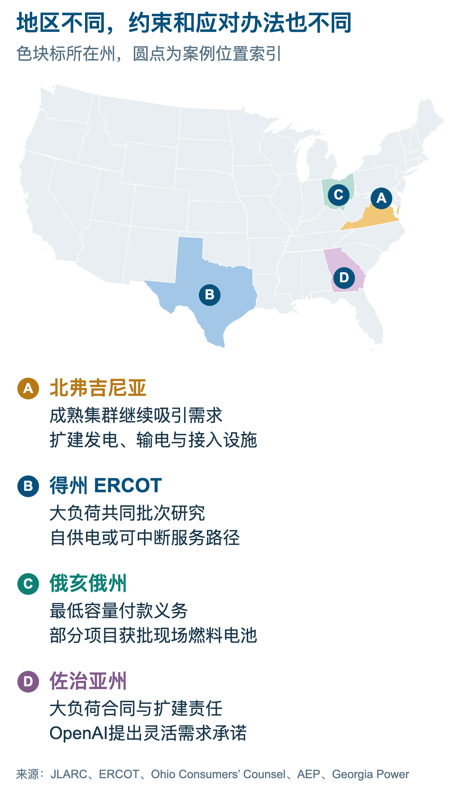
图5｜四个地区的位置与不同应对办法。来源：JLARC、ERCOT、Ohio Consumers’ Counsel、AEP、Georgia Power。
这并不意味着其他地区没有机会。NERC报告覆盖多个北美评估区域，不同区域面临不同的季节性风险、资源结构和燃料限制。新英格兰需要考虑严寒条件下的天然气基础设施，部分中西部地区需要处理负荷增长与可调度资源变化，西部一些地区还要处理水文和风光出力条件。供电优势不会简单地从一个拥堵州平均转移到所有其他州。[14]
在全国层面扩建输电，有助于扩大资源共享，却不能一夜之间把地区瓶颈消除。DOE对输电选址与许可的说明，列出了不同层级和不同土地条件下的程序。线路进入某一地区后，往往还需要相应变电站、保护系统和下游配电配合。上游主干网扩建与园区送电有相关性，但它们不是一份单独的工程，也不必拥有完全相同的完成日期。[3]
设备交期会让这条链条更长。DOE的配电变压器材料记录，2019年的采购周期约为三到六个月，到了2024年可达到一到两年甚至更长。这里说的是配电变压器及当时的调查背景，不能把它当成2026年所有大型主变压器的最新统一交期。它说明了一种真实机制：即使资金和项目许可具备，具体设备规格、工厂产能和交付排期仍可能成为施工进度的约束。[3]
数据中心电力工程还要求设备之间相互匹配。高压接入、变压、开关保护、UPS及机房配电不是随便拼起来的一组库存。先锁定部分设备，可以降低采购不确定性；但在供电方案和园区分期尚未稳定时抢购，又可能造成规格不合、到货与施工不同步，或提前占用资金。供应链紧张提高了早规划的价值，也提高了错误规划的代价。
另一个经常混在一起的概念，是“已经送电”和“全部容量已可使用”。第一期可能获得一部分服务，后续扩容仍等待新线路；变电设施可以按终期建设，服务器却逐步填充；园区也可能先采用可中断服务，再转为更可靠的长期服务。只有把分期容量、服务等级和实际负荷放到同一时间线上，才能知道项目的商业进度是否跟得上电力进度。[5][6]
园区开业要让几张进度表对上：客户进场、服务器到货、机房完工、电力送达。服务器先到而送电延期，会占用资金；电力设施先建成、客户却迟迟不上线，又会留下利用不足的资产。各方需要约定负荷分期和建设里程碑，把承诺变成可以共同执行的排期。[5][8]
NERC的风险图给出了需要提前补资源的地区。评估结果取决于所采用的负荷、退役和新增资源假设。报告指出，部分获准加速接入的新发电资源尚未进入评估模型，及时建成可以改善结果。它提供的是在某一信息时点下的压力测试，帮助各方提前行动；后续资源与需求变化，会改变风险的实际大小。[14]
这就解释了为什么电价较低的地区，未必对每个项目都便宜。若送电需要更久，或必须先自建发电、长距离光纤及额外备用，低电价优势可能被资本占用和额外投资削弱。相反，一个名义电价高一点、接入条件清楚且送电日期可靠的地点，可能更符合有确定客户与设备交付计划的项目。选址需要比较整套交付成本，而不是一列州平均价格。[1][13]
供电的质量也要写进比较。同样名义容量，一项服务可以在系统紧张时受限制，另一项则需要电力公司为客户安排更完整的资源。可中断服务有机会更快或更便宜，却要求业务真的能够承受对应条件。采购时如果只记住容量和单价，遗漏中断、恢复及扩容条款，企业得到的可用算力就可能与销售承诺不匹配。[5][6]
美国数据中心眼前的电力瓶颈，要同时看地点与工期。增加发电改善资源供应，扩跨区通道扩大互济，地方工程把电送进园区。项目在哪一层等待，就要补哪一层条件。这个判断也会改变对“需求很大”的理解：需要扩建多少设施，取决于有多少需求能够按时兑现。
第三章 申请了多少，最后会用多少
一份容量申请，还不是电表上的负荷。申请时，开发商可能尚未确定全部客户；企业也可能同时比较多个地点。融资、供电报价和设备采购，都会改变规模与分期。规划部门要为增长留空间，也要识别哪些项目已经作出足够承诺，否则可能为尚未形成的需求提前建设过多资产。[5][14]
PJM的2026年长期负荷预测，已经把这种差别写进方法。报告说明，在近期预测中，大负荷需要较明确的电力服务义务或建设承诺；远期项目如果承诺较弱，就按更高的不确定性折减。PJM还解释，2026版在2032年以前的预测低于2025版，原因包括电动车、经济因素和大负荷调整。这个修订说明预测需要校准，并不等于当地实际用电已经下降。[5]
PJM同年发布的负荷预测准确性报告，又把已观察到的大负荷峰值与不同年份预测分开展示。报告特意标明，一些分区没有历史大负荷数据；实际月峰值、平均每日峰值和夏季大负荷调整，也不是同一个系列。这类透明度很有价值：市场可以从“预计某年有多大”走向“过去承诺了什么、现在实际实现了多少”，而不是只追逐下一次更大的公告。[5]
负荷曲线还会随着园区填充而变化。供电合同可以为最终规模预留条件，第一批服务器则只产生初始负荷；后续设备与客户逐步进入，才把负荷推向终期。电网若只收到一个最终MW数字，就很难判断哪一年需要什么资产。企业披露分期的价值，在于让客户进场、设备采购和供电扩建同步，而不是给一个很大的终期目标附上含糊的开业年份。[5][14]
看项目是否会兑现，可以沿着图中的证据走：地点与容量意向，系统研究，具有约束力的合同，建设与调试，送电及实际运行。每一步回答不同问题。土地协议证明取得开发条件，购电协议证明安排了交易；到了送电和持续负荷，才看见真正进入电力系统的需求。各地流程名称和先后可能不同，证据仍需要分别登记。[5][6]
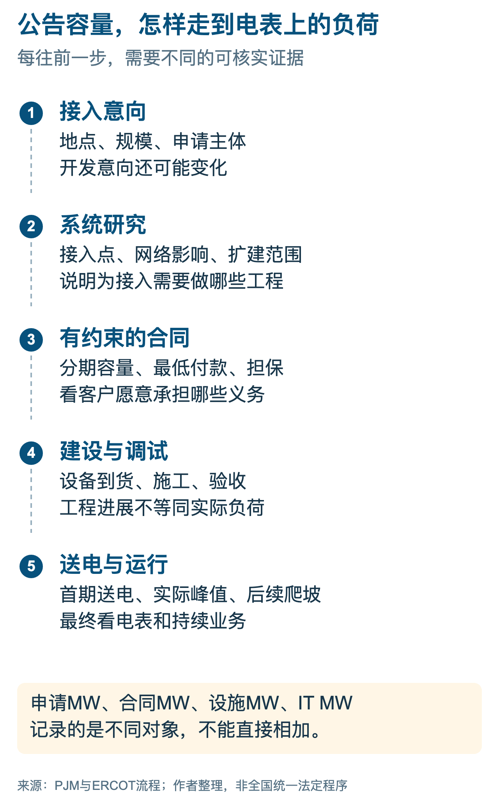
图6｜申请容量走到实际负荷，需要哪些证据。来源：PJM、ERCOT；阶段为作者归纳。
ERCOT在2026年6月公布的“Batch Zero”改革，从另一侧说明了压力。符合条件的大负荷将进入批次研究，而不是让各项目在相互变化的假设下不断做独立研究。大型项目的接入会改变邻近项目的电力潮流和输电需求，批次协调有助于给多个申请者建立共同的系统基准，减少一个项目修改规模后其他项目反复重算的情况。[6]
ERCOT这项改革面向75MW及以上、满足资格条件的大负荷，并提供现场自供电或可中断负荷等路径。它在2026年6月公布的安排，把首批最终输电计划预计完成时间放在2027年秋季。计划形成以后，还要建设和投运。PJM的预测折减与ERCOT的共同研究虽是两种办法，却都在让申请者交代承诺程度和交付条件。[5][6]
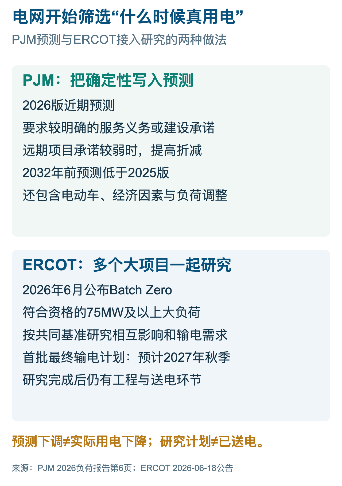
图7｜PJM与ERCOT怎样处理负荷申请的不确定性。来源：PJM 2026年预测；ERCOT 2026年批次安排。
北美电力可靠性公司NERC的长期可靠性评估，也直接讨论了这层不确定性。评估使用电力供应实体和规划机构提供的预测，纳入的项目已经超过单纯探询阶段，仍可能因许可、施工、电网开发和企业决定而变化。报告特别说明，PJM和ERCOT后来下调了一部分近期负荷预测，而这些更新由于时点原因没有纳入本次评估。预测有版本，可靠性结论也必须连着版本读。[14]
判断需求真假，最有说服力的反证来自同一项目的前后变化：原来约定的投运日是否延后，终期容量是否下调，第一阶段是否已经送电，是否有真实客户愿意承担最低用电承诺。申请名单里的撤回与推迟，不会自动推翻全行业增长；它们更可能说明扩张受制于交付条件。反过来，一份越来越长的名单，也不足以证明所有项目都有同样的商业基础。[5][14]
还有一种重复发生在机构统计之间。同一园区可以同时出现在开发商公告、地方招商消息、电力公司的负荷预测和电网接入记录里。如果把这些记录当成四个不同项目，行业规模就会被放大。识别时需要核对地址、项目主体、接入点、分期和合同关系；不同法人可能属于同一园区，同一个公司名下也可能有多个真实园区。去重的对象应当是工程与负荷，而不是简单删掉相同的企业名称。
这会改变“缺多少电”的问法。规划部门需要的是不同年份、不同接入点、不同确定程度的负荷分布；企业需要的是在自己开业日期前可以获得的服务；设备制造商需要的是有约束力的订单和交付节奏。全国的需求区间可以给出产业方向，园区级合同与工程证据才决定设备和资本应该排到哪里。把几种信息分开，才能同时避免低估真实增长和高估纸面繁荣。[4][5]
真实用电增长与项目兑现困难，正在同时发生。近期有明确承诺的负荷，可以推动具体投资；远期意向则要留在带条件的预测中。下一轮增长，要看有多少项目从申请走到工程，再进入持续运行的业务。电网要求的承诺越具体，扩建费用由谁承担的问题也越难回避。[4][5][6]
第四章 新线路和变电站，谁来付钱
只要扩建电力系统，就要有人先出钱。电力公司可以投资新线路和变电站，区域系统可以安排资源采购，发电企业可以建设电源，数据中心也可以承担接入工程或签长期购电。最终谁承担成本，不只取决于工程由谁建设，还取决于监管允许怎样回收、哪些客户分摊，以及大客户如果推迟或退出，剩余责任由谁接手。[7][8]
公众最担心的情况，是电力公司按大客户承诺建设了资产，客户却没有形成预计用量。部分成本一旦进入公共费率体系，其他客户可能仍要承担剩余回收。在另一种情况下，数据中心确实按计划用电，并通过长期合同覆盖新增成本，它也可以贡献系统固定费用。两种情况并不矛盾，区别在合同强度、实际负荷和成本归集。[7][8][9]
州监管机构正在把这些区别写成更明确的规则。弗吉尼亚SCC在2026年2月公布的说明，列出了Dominion大型客户的新安排：单独的GS-5费率类别、改进成本分摊、最低合同义务、最低付款和信用保障。单列客户类别的意义，是让监管更清楚地识别这类客户造成的成本，而不是继续把增长很快的大客户与一般用户放在同一套平均假设里。[8]
其中，新大型客户如果在2027年1月1日及以后签约，需要至少十四年的服务与付款义务。最低合同年限把电力资产的较长回收周期，与客户承诺联系起来。数据中心服务器和客户业务可以变化，线路和变电设施却不会因为某一代芯片退役便自动消失；长期义务是在告诉客户，它所触发的基础设施不能只由别人承担长期风险。[8]
适用的大型客户，每月还要至少承担为其服务所发生的85%输电与配电成本，不论实际用电多少；2016年1月1日前已经开始服务的客户有豁免条件。这项最低付款锁定的是网络成本。按实际消耗结算的电能，属于账单中的另一部分。[8]
对于信用不足的新增客户，SCC说明还列出了覆盖最高60%最低合同费用的担保要求，适用于上述未来签约时点。担保解决的是履约能力：承诺很长，如果签约主体缺乏足够信用，公共系统仍可能面临损失。费率、合同年限和担保配合使用，才能同时处理用量不足、提前退出与付款违约这几种不同风险。[8]
俄亥俄州的条款，锁定的是另一种费用。州消费者法律代表机构介绍，PUCO于2025年7月9日通过的AEP Ohio数据中心费率，要求新的大型数据中心对约定电力容量承担至少85%的付款义务，期限最长十二年。该机构页面还记载，行业团体在2025年11月提出上诉。与弗吉尼亚相比，数字相同，收费基数不同：一边是输配电成本，一边是合同容量相关付款。[17]
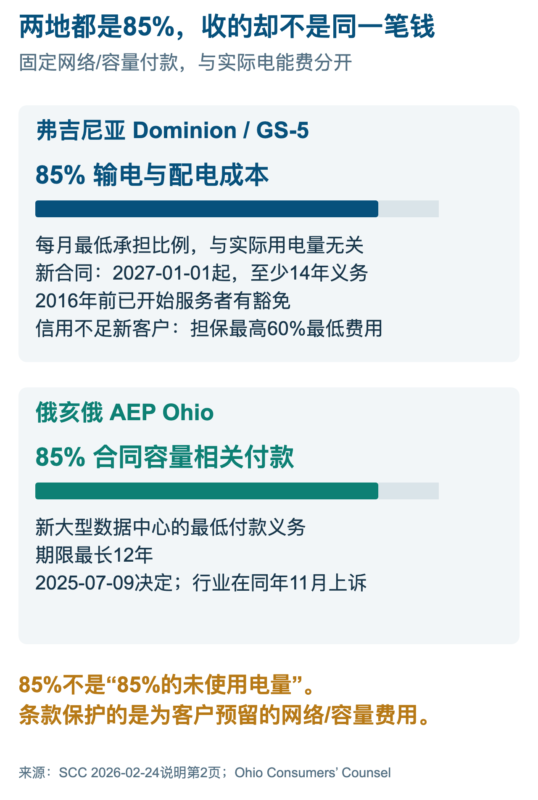
图8｜两地最低付款中的85%，收费基数不同。来源：SCC 2026年2月说明；Ohio Consumers’ Counsel。
最低付款会改变开发商的行为。在没有最低承诺时，提前申请较大的终期容量成本可能较低；一旦需要为保留的容量付款，开发商就更有理由把分期计划写实。它必须比较未来客户需求、服务器交付与电力承诺，而不能无限制地占住多个地点的额度。对电网来说，这既是一种成本保护，也是提高需求预测质量的手段。[5][8][17]
从企业账上看，最低付款使一部分电力支出从随业务量变化的费用，转为接近固定承诺的费用。业务利用率下降，服务器的实际能耗可以减少，保留的网络服务与容量付款却未必同比下降。因此，分析一家算力企业的单位成本，应当分别看按kWh计量的能源与按合同或峰值安排的收费。用低利用率去按比例缩小整个电费，会低估空置阶段的现金压力。[8][17]
JLARC的研究提供了一个有用的对照：2024年委托的独立研究认为，当时费率总体上已经把现有服务成本适当地分配给包括数据中心在内的客户，同时担心未来增长提高全系统成本。现有客户承担了自己的服务成本，新增需求仍可能需要更贵的资源和网络投资。讨论居民是否受影响，要同时查看这两笔账。[7]
不过，“数据中心付自己的钱”还需要回答哪些钱算它自己的。园区专用线路比较容易归属，一项同时服务多个地区的主干网扩建、一个改善全系统可靠性的电源，归属更复杂。如果全部压给最新接入者，可能让其他受益者免费获益；如果过度平均分摊，又可能让老客户补贴新项目。成本因果与系统受益，是监管需要同时处理的两面。[8]
2026年3月，白宫发布“Ratepayer Protection Pledge”相关公告，强调大型科技企业应承担相应能源与基础设施成本，避免居民为其扩张买单。它表达了明确的政策方向，但具体付款责任仍要落到州监管决定、电力费率、输电服务及客户合同上。一份全国性承诺不能代替各地已经生效或正在审理的条款，判断保护是否落地，需要继续看实际合同和账单。[15][8]
居民会不会因此多付电费，各地研究的答案取决于情景。JLARC在2024年估计，到2040年，典型Dominion居民客户与发电、输电有关的月成本，可能增加14—37美元，以不变价计算。这是长期模型结果，地区和成本范围都有明确边界；图中保留这些条件，才能看懂它讨论的是哪一笔未来支出。[7]
Georgia Power则预计，大客户的新增收入能够帮助分摊系统成本。它在2026年8月介绍获批的OpenAI合同及大负荷客户组合时，预测从2029年起每年可带来约9.5亿美元的客户节省。预测针对大负荷组合，采用公司测算，节省能否兑现取决于收入和成本进展。这与JLARC居民单户月成本模型，单位、期间和对象均不同。[9]
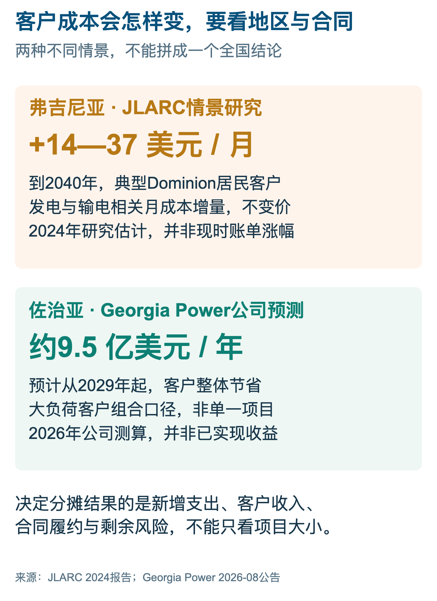
图9｜客户成本的两种未来测算。来源：JLARC 2024年研究；Georgia Power 2026年公告。
居民的担心也不限于电费。Gallup在2026年5月公布的调查显示，受访美国成年人中，71%反对在自己所在地区建设AI数据中心。调查在同年3月开展，记录的是态度而不是经济影响测量；它不能证明每个地方的电费上涨都由数据中心造成。不过，这种地方接受度会影响审批与政治压力，使企业不得不更清楚地解释成本、水资源、噪声和社区收益。[16]
公司承诺“承担全部成本”，也要看约定边界。专用接入工程、系统扩建、运行中的备用服务和退出后的剩余资产，可能在不同文件中处理。对外公告可以解释原则，完整账单与监管审理才决定责任怎样分配。若合同关键部分没有公开，研究可以确认谁作了什么承诺，但不能据此补出未披露的担保金额、赔偿公式或实际电能价格。承诺的可信度来自后续履约，而非新闻稿用词的强度。[8][9]
成本分担正在成为选址条件的一部分。能承担长期付款与担保的大型客户，更有能力把供电承诺变得可信；缺少稳定客户和资本支持的项目，则更难长期占用公共基础设施。电力合同因此不只是采购文件，也在筛选项目。市场讨论的重点，将从“谁宣布了更大的园区”，逐渐转向“谁愿意为真实需求承担可以执行的义务”。[8][17]
收费本身还会影响项目对电源的选择。公共网络最低付款越强，企业越需要评估自建电源是否真正降低总支出；但保留公共电网备用可能仍然带来收费。若只比较发电设备的燃料成本与公用事业完整到户电价，就把两套不同服务拿来比较。合理的对照应包括投资回收、维护、燃料、备用、排放许可，以及双方共同承担的网络服务。[8][13]
第五章 核电、燃气和绿电怎样补位
接入变慢，企业会寻找新的电源与采购安排。先看这条路线补在哪里：签长期购电协议，可以安排电能、价格或环境属性；新电源、园区接入和紧张时段的可靠供电，则要有各自的工程与服务条件。核电、现场燃气和风光储，解决的问题并不相同。[11][13]
核电能够提供较稳定的低碳电能，适合长期运行的负荷。具体项目仍要分三种看：向既有电厂购电，支持停运机组重启，建设新反应堆。第一种调整售电安排，后两种有机会增加供给，但时间与工程要求不同。下面两个已经披露的案例，正好展示这种差别。[10][11][13]
微软与Constellation围绕Crane清洁能源中心建立的长期购电安排，属于以合同支持停运机组重启的案例。重启对象是原三哩岛一号机组，不是发生事故的二号机组。Constellation在2025年将目标推进到2027年，2026年8月的公司材料披露获得FERC和NRC的关键批准。这个案例可以讨论新增供给和长期客户如何配合，但截至本文时点，应按重启项目与未来目标描述，不能作为已经投运的电力。[10]
Talen与Amazon的安排，则来自既有核电厂。Talen在2025年6月披露，扩大的购电合同在全合同规模下达到1920MW，期限至2042年，并有延长选择。材料说明，园区建立电网连接后转向表前零售安排，过渡期保留部分表后安排。图中把它与Crane分开：前者是已有电厂的电能与容量交易，后者是推动停运机组重启，不能把合同MW当成新增机组装机。[11]
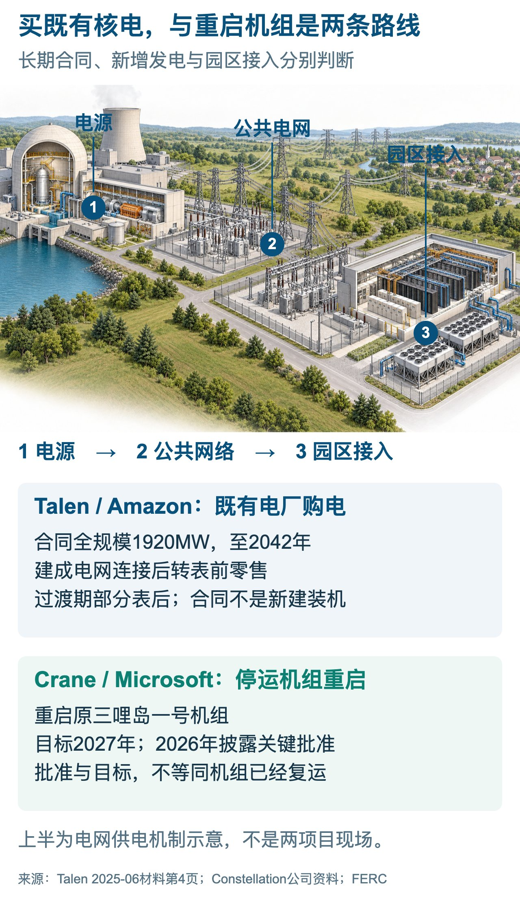
图10｜既有核电购电与停运机组重启。来源：Talen、Constellation公司材料；上部路径为通用工程示意。
“表前”和“表后”说的是计量与服务安排，不能自动翻译成“公共电网”和“完全不用电网”。一个贴近电厂的园区，仍可能在电厂检修或故障时需要其他资源；它是否从电网取电、取多少、预留什么备用，需要合同和实际配置回答。FERC在2025年12月要求PJM完善发电与大负荷共址的输电服务规则，正是因为原有规则对这类安排的收费与服务条件不够清楚。[2][11]
共址最吸引企业的地方，是有机会缩短物理路径、利用已有电力设施，并让负荷与资源建设同时规划。争议最集中的地方，则是系统责任有没有真正减少：如果平时只向旁边电厂买电，遇到故障仍希望公共电网立即补足全部需求，就不能只按平时取电量来评价需要预留的系统能力。它减少哪种成本、保留哪种依赖，都要经过工程与费率规则的具体分析。[2][13]
现场燃气供电，把一部分资源建设移到园区附近。AEP在2025年6月披露，俄亥俄州批准在两个数据中心地点部署现场发电资源。获得批准，说明项目跨过了一项建设条件；运行还要等待施工、测试和其他必要准备。[18]
这两个项目采用Bloom固体氧化物燃料电池，AWS和Cologix按长期协议承担全部成本。图中天然气经过处理，进入燃料电池，通过电化学反应产生直流电，再经过电力转换供给负荷。这条路线与燃气轮机或内燃机的机械发电不同，设备、交付与维护也需要分别看。共同要求是燃料可靠送达、现场设施按期建成，以及供电与备用安排适合业务。[3][18]
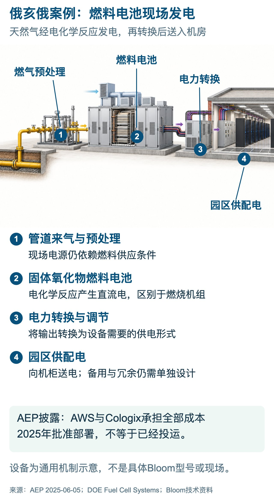
图11｜俄亥俄案例中的现场燃料电池供电。来源：AEP、DOE燃料电池说明、Bloom技术资料；通用工程示意。
现场电源也要承担可靠性成本。若数据中心需要连续运行，发电机组故障、维护与负荷变化都必须有应对。IEA在2026年的分析中估计，为关键且可变的数据中心负荷提供可靠现场燃气供电，装机可能需要比所服务的需求超配30%—70%。这是报告模型中的范围，取决于配置和可靠性要求，不能套成所有园区统一的固定系数。[13]
IEA还指出，燃气轮机供应约束会影响现场电源建设，因此自建不一定比电网供电更快。它对相关美国项目的卫星观察显示，当时约五分之一进入土地清理或建设阶段。这是工程活动的观察，不是投运比例；报告对2030年全球数据中心现场燃气装机给出15—27GW预测，并注明主要增长在美国。已经动工、计划未来投运和正在发电，是三种不同状态。[13]
现场发电仍依赖燃料网络。机器到位以后，天然气还要通过管道和合同持续到达；冬季紧张时，电力与燃气系统可能同时承压。NERC把两者协调列为可靠性工作的重要部分。改变电力接入路径，也意味着园区接手燃料供给、现场运行和维护的新责任。[14]
风电、太阳能与储能，可以提供新电量、改善供电组合，并在适当条件下承担部分时段的资源需求。但一份按年度电量匹配的可再生能源PPA，不等于园区每个小时都得到相同来源的电。风光出力随时间变化，储能能支撑多久取决于功率与能量配置。解决年度能源与解决全天可靠运行，可以相互配合，却不能只靠一个年度匹配比例完成。[13][14]
储能也有两个不同的数字：MW描述放电功率，MWh描述储存能量。说明性地忽略损耗，以能量除以功率可得到额定放电时长；实际可用时长还受荷电状态、效率和运行策略影响。用于跨过短时系统高峰的电池，与用于连续多日供电的能源安排，面对的投资和充电条件不同。将一项大功率电池公告直接描述成园区全年能源已经解决，会跳过最关键的能量与时间问题。[13]
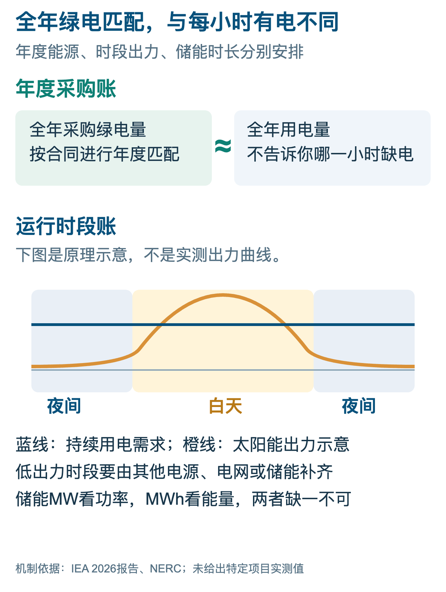
图12｜年度电量匹配与逐时可靠供电。来源：IEA、NERC；曲线为原理示意。
Alphabet收购Intersect，显示科技企业正在更深入地组织能源与数据中心开发。2025年12月的协议公布了47.5亿美元现金加承担债务的安排，涉及约定范围内的数据中心与能源开发资产；Alphabet在2026年4月的财报电话会上确认交易于3月完成。这个进展应按已完成收购描述，但被收购组合中仍处于开发、建设阶段的项目，不能因此全部变成已投运容量。[12]
这类整合把电源、土地、接入和机房的开发时间表，放进更靠近的组织中。电源先建成、园区未准备好，或者园区完工、资源尚未到位，都会占用资本。科技企业可以减少部分协调成本，也会承担更多能源工程和投资风险；所在区域的电力系统规则仍然适用。[12][13]
公共电网共享多种电源与备用，独立园区则需要自己组织相应能力，这也是网络供电仍有经济价值的原因。现场发电、核电PPA、风光和储能可以组合使用。选方案时先识别缺口：缺年度电量、接入能力、关键时段容量，还是交付时间，再比较投资、服务与可靠性。具体供电条件清楚了，选址才有可以落进账本的依据。[13]
第六章 下一座机房，沿着什么条件选址
电力成为时间表上的关键条件，选址排序也会改变。成熟市场的网络、客户与配套继续吸引企业；供电是否可靠、扩建是否明确、合同成本是否可控，则获得更高权重。企业需要比较的是整座园区能在哪一年营业，而不只是地址是否属于知名集群。[7][13]
州平均电价可以作为第一轮筛选。EIA在2026年9月公布的月报显示，同年1—7月，得州工业平均电价为6.72美分/kWh，弗吉尼亚为10.08美分/kWh。这是州级工业客户的平均收入除以售电量，属于月度统计的初步估计，不是两地任意数据中心都能拿到的报价。电力公司可能按行业或费率阈值分类客户，数据中心不必全部归入工业部门。[1]
同一期数据中，亚利桑那为7.66美分/kWh，佐治亚为7.99，俄亥俄为10.32，俄勒冈为8.33，全国为9.03。地图给出这些州的位置，条图比较同口径的数值。它能帮助初筛，园区报价还要继续查服务区、适用费率、接入电压、需量计费和合同义务。客户结构与收费安排不同，会改变实际成本。[1]
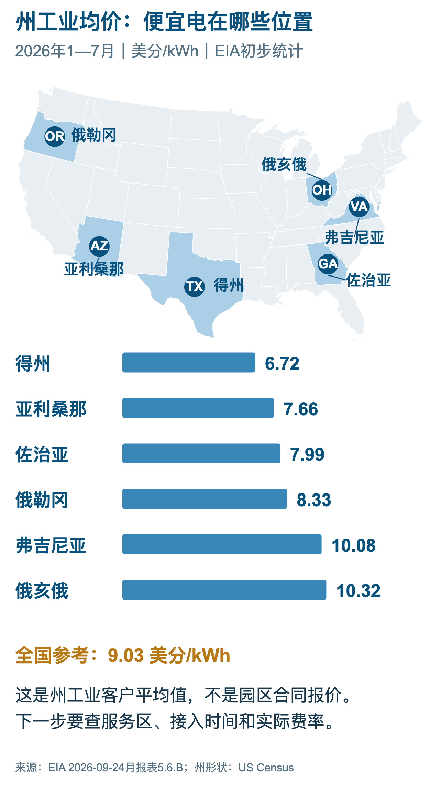
图13｜六州的位置与工业平均电价。来源：EIA 2026年1—7月数据，表5.6.B。
如果继续比较，需要把电能费、容量或需量费、输配电、燃料调整、专用工程、担保以及可能的最低付款分开。表面上便宜的电能单价，可能伴随较高的峰值收费；园区还可能为提前获得服务承担现场电源。更完整的账单能改变州平均价格所给出的第一印象，因此，研究“哪儿电便宜”应当尽快进入具体服务区与费率，而不是停留在排行榜。[8][17]
说明性地把时间加入账本：如果设备、建筑或已投入资本在等待送电，资金成本就与等待期相连。简单模型可以写成“占用资本×年资金成本率×等待月数÷12”，这里只估算资金占用，不包括收入损失、设备贬值，也不自动代表净新增损失。真实比较应以按期和延期两套现金流为基准，避免把同一项影响在利息、折旧和利润中重复计算。
业务类型也会改变选址余地。需要接近用户的实时服务，要满足时延和服务区域要求；部分可以批处理的计算，则有更多调整运行时间的空间。数据移动、中断时长和任务恢复都有成本。能调度一部分训练，不能由此推及所有在线推理和企业系统。[12][13]
Google在2025年公布了与Indiana Michigan Power和TVA的需求响应合作，并介绍调整部分机器学习工作负载的做法。它也披露此前与OPPD开展的演示。关键变化在于，数据中心可以把一部分计算安排纳入电力系统协调，在紧张时段降低负荷。这里的资源是实际可调度的工作负载，而不是对外承诺所有服务随时停止。[12]
Georgia Power披露的2026年OpenAI合同，把这种灵活性写进了一份大负荷安排：3200MW新增需求、最高1000MW灵活需求响应承诺，由客户承担服务所需基础设施成本。合同组织了规模、扩建责任与调度条件；工程分期、实际用量和响应执行，还要在后续运行中兑现。图中的箭头表示任务调整机制，合同数字表示承诺范围，并非实测用电曲线。[9]
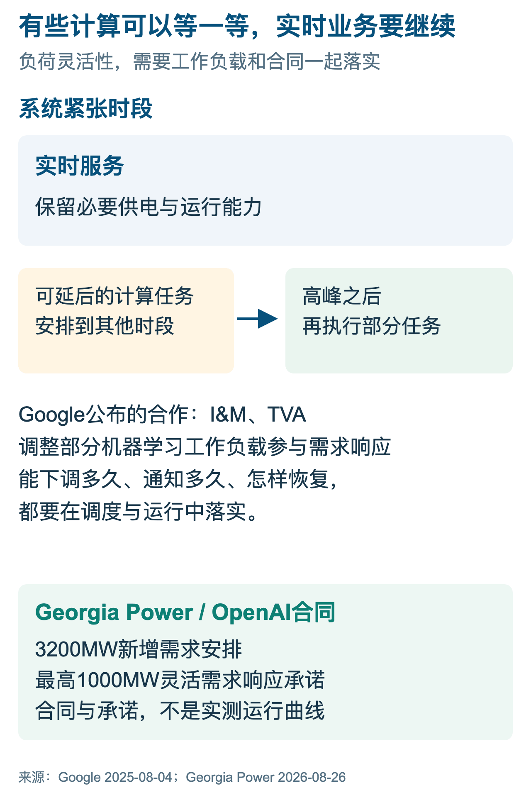
图14｜可延后的计算与需求响应合同。来源：Google 2025年公告；Georgia Power 2026年合同公告。
需求响应为什么有价值，可以从系统高峰解释。电力系统为少数紧张时段准备额外资源，平时并不总需要这些能力；如果一部分负荷在那些时段可靠下降，便有机会减轻新增资源与网络压力。企业为此付出的，则是任务推迟、设备利用率变化、备用安排和调度成本。优惠或补偿必须与企业实际可以提供的灵活性相匹配，纸面“愿意配合”并不足够。[13]
灵活性也需要核验。能够下调多少功率、提前多久通知、一次可以持续多久、一年允许多少次，以及恢复负荷时是否形成新的高峰，都影响系统得到的实际帮助。承诺一部分计算可以延后，与证明每次紧张事件都能按要求执行，之间还有运营距离。电网需要可测量、可调度的响应，企业则需要把补偿与失去的计算产出放到同一本账里。灵活服务越普及，这套合同和测量就越重要。[12][13]
PJM截至2026年10月的公开页面，已经把“自带新增容量”与另一等级服务放到新的大负荷框架中。其IRAS方案希望允许提供新增电力资源的大客户接入，也为没有自带资源的客户安排替代服务条件。页面明确标为等待FERC批准，相关登记工具预计2027年2月上线，按区域汇总的公开信息预计3月提供。提案和未来工具不能当作已经全面实施的制度。[5]
这种制度方向与ERCOT的批次研究和现场自供电路径可以连起来看：新增负荷越来越需要说明自己怎样进入系统，是带来新的资源、接受部分时段约束，还是等待完整可靠服务所需的扩建。各地办法不同，却共同把供电从一个笼统的接入申请，拆成可执行的条件。未来布局将受到这些条件影响，而不只是受到发电资源的地理分布影响。[5][6]
这也可能使不同规模企业的竞争条件发生变化。能签长期合同、提供担保、共同开发电源的客户，拥有更多组织方案；资金与客户确定性较弱的开发商，更依赖已建成的托管设施或现成供电条件。这是一种从合同与工程机制出发的判断，不意味着规模大的企业一定成功。大项目自身也面临协调更多设备、客户和资源的困难。[8][12]
对成熟市场，合理的结果未必是全面撤离。一部分项目继续为连接、客户和产业配套支付较高成本，一部分新增负荷转向供电条件更好的外围或其他地区，还有一部分采用分期与灵活服务。选择会随业务类型变化。更值得观察的是新增投资怎样分配，而不是用某一个新园区的公告宣布旧中心失去价值。[7][13]
对接收新增项目的地区，便宜土地和电价也不够。它需要知道大客户何时形成负荷，怎样覆盖新资产成本，若项目退出如何处理，并确认网络、用水及地方建设条件。抢到一个大型项目，只有在合同和资源都能持续兑现时，才会变成稳定收益。Georgia Power对未来节省的预测，和弗吉尼亚对成本分摊的保护，恰好说明招商与风险约束需要一起设计。[8][9]
新增项目会继续寻找能把几种条件组合起来的地点：真实客户、可融资的长期合同、清楚的供电责任，以及按期完成的工程。成熟集群可能承接适合它的业务，其他地区则用不同的电源、服务和成本条件吸引增量。客户、设备、网络与电力能够在同一张进度表上兑现，园区才有持续运行的基础。
格洛可点评
电力正把数据中心竞争从单纯的设备投入，拉向资源组织与风险承担。区域系统提供共享能力，地方电力公司承担工程，科技企业提供长期需求，居民则关注成本与环境影响。谁先建设、谁承诺付款、谁承担退出风险，决定了收益如何分配。长期合同可以帮助融资和扩建，也会筛掉一部分只愿意保留选择权、不愿意承担兑现责任的项目。
弗吉尼亚的独立费率与长期义务、俄亥俄州的最低容量付款、得州的批次研究，以及Google对能源开发与负荷调度的投入，表明这场变化已经进入具体安排。它们的共同方向，是把需求真实性和新增供给放到同一套责任中。不同地区的结果仍会不同，取决于各自的资源、网络、合同与客户，不能用一个全国平均数代替。
美国的电力约束会影响AI扩张的速度和地点，却不会只产生“建不成”一个结果。项目可以分期、迁移、购买现有服务，或参与新的资源建设；这些选择都有成本。申请变成负荷、合同带来收入、工程按期送电，扩建成本又由有能力履约的主体承担，项目才具备持续运行的基础。这几件事的兑现速度，会决定下一阶段算力供给的实际边界。
来源
[1] 美国能源信息署（EIA）。
[2] 美国联邦能源监管委员会（FERC）。
[3] 美国能源部（DOE）。
[4] 劳伦斯伯克利国家实验室（LBNL）。
[5] PJM Interconnection。
[6] 得州电力可靠性委员会（ERCOT）。
[7] 弗吉尼亚州议会联合审计与审查委员会（JLARC）。
[8] 弗吉尼亚州公司委员会（SCC）。
[9] Georgia Power。
[10] Constellation。
[11] Talen Energy（含向SEC提交的公司材料）。
[12] Google、Alphabet与Intersect。
[13] 国际能源署（IEA）。
[14] 北美电力可靠性公司（NERC）。
[15] 美国白宫。
[16] Gallup。
[17] 俄亥俄州消费者法律代表机构（Ohio Consumers’ Counsel）。
[18] American Electric Power（AEP）。
[19] 美国人口普查局（US Census Bureau）。
备注
资料截至2026年10月9日。LBNL全国用电数字采用2024年研究版本；2028年区间属于该版本预测。EIA州电价采用2026年1—7月工业部门平均口径，不等同于数据中心报价。JLARC的居民成本来自2024年长期情景；Georgia Power的节省来自2026年公司预测。合同容量、装机、园区总负荷与IT功率不互相替代，时间目标不等同于投运。
三张地图的州形状依据美国人口普查局地理数据绘制；三大互联分界对照EIA与ERCOT官方图作概览重绘，不能用于判断具体园区接入点。工程插画用于讲解设施或供能路径，均在图内标明通用示意；燃料电池设备路线与AEP案例对应，不代表实际场址或厂商施工设计。年度匹配曲线与任务调度箭头是原理图，不是实测数据。重要条件直接标在图中，来源链接、原件身份与摘录随研究材料交付。
格洛可